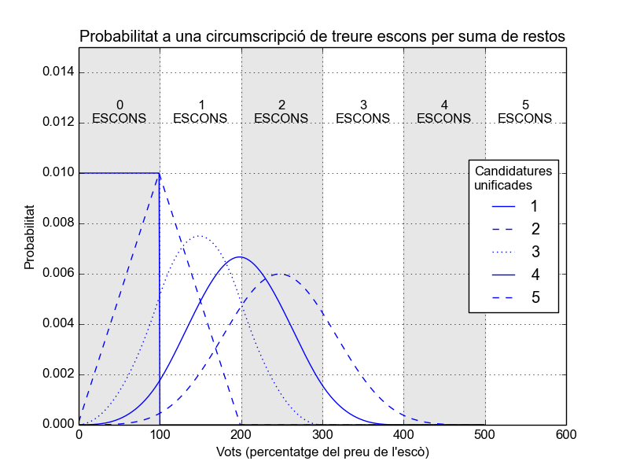

Articles by David García Garzón
Llistes d'unitat nacional, confluències i d'altres animals (polítics)
Tothom ha escoltat les propostes de ERC i CiU de com anar a unes eventuals eleccions plebiscitàries. Junts o barrejats. Un dels arguments que s'han fet servir per fer una candidatura unitària és que es veuria beneficiada pel sistema electoral. Jo em pregunto, segur? Anem a fer els deures per ells, farem l'anàlisis electoral.
-
Europeas20142014-05-25 01:28
El efecto de tu (no)voto (III): Los números
Después de las dos entradas anteriores, el resto de personitas tenemos que hacer números. Principalmente porque se nos ha bombardeado con un montón de mitos sobre el sistema electoral y las posibilidades del mismo que no son ciertas. Y también porque lo que es verdad para unas elecciones no tiene que serlo para otras y hay que desaprender algunas cosas.
-
Europeas20142014-05-23 19:22
El efecto de tu (no) voto (II): No eres un puto nazi de mierda
Antes de entrar con los números un poco de poca imparcialidad: Supongo que, si me estás leyendo, NO eres un puto nazi de mierda. Sabes leer. Pero hay mucha gente que vota al azar partidos pequeños como castigo. Ojo, que puedes acabar financiando los pintorescos autobuses del 12 de Octubre repleto de orangutanes gamados.
-
Europeas20142014-05-23 18:15
El efecto de tu (no)voto (I): Te mola PP o PSOE
A petición popular hago un resumen del efecto de los votos o no votos en estas Europeas. Es imposible hacerlo neutral, pero al menos intentaré cubrir todas las opciones. Mi primer consejo, para que no se diga que no tengo en cuenta a todo el mundo, es para los hooligans del bipartidismo (PP-PSOE). Y este primero, sin números, para que lo entiendan.
-
Parlament20122012-11-25 16:24
Elecciones al Parlament 2012: Cómo afecta mi voto
Elecciones autonómicas catalanas del 25 de Noviembre 2012. Circunscripción Barcelona.
-
Generales20112011-11-13 16:59
De la politica ficción a la política acción
Este es el outline que seguimos en las primeras charlas que dimos para dar difusión a los resultados de nuestras pesquisas. La primera fue en la Plaça de la Vila de Sant Feliu de Llobregat y la segunda en el Foment Cultural I Artístic de Sant Joan Despí. sobre los resultados de nuestra investigación.
Tags
- Umbral_Electoral (1)
- Voto_Nulo (1)
- No_Voto (1)
- Voto_en_Blanco (1)
- D'Hondt (2)
- Circunscripciones (3)
- Parlament (3)
- Coaliciones (1)
- Europeas (3)
- Generales (5)
- Charlas (2)
- Legislación (1)
Categories
- Europeas2014 (3)
- Fundamentos (1)
- Generales2011 (5)
- Mitos (1)
- Parlament2012 (1)
- Parlament2015 (2)